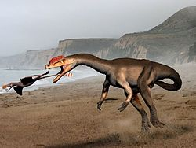

Привет! Это сайт посвещённый динозаврм, это мой курсовой проект.
Наслождайтесь!
«Триасовый период»
Азилозавр

Азилозавр (лат. Asylosaurus, "ящер из приюта") – род динозавров, относящихся к кладе Dinosauriformes, живший в позднем триасе (рэтский век, около 208-201 миллионов лет назад) на территории нынешней Великобритании. Несмотря на то, что название звучит внушительно, Азилозавр известен лишь по фрагментарным останкам, что делает его одним из самых загадочных динозавров своего времени. Его история – это история переоткрытий, классификационных споров и надежд на новые открытия.
История открытия и классификации:
История Азилозавра начинается еще в 1836 году, когда британский геолог Генри Райли обнаружил кости, которые впоследствии были отнесены к Thecodontosaurus platygnathus. Прошло много времени, прежде чем Питер Гальтон, в 2007 году, пересмотрел останки и пришел к выводу, что некоторые из костей отличаются от типичных для Thecodontosaurus. Он выделил их в отдельный род и вид – Asylosaurus yalensis. Название рода Asylosaurus ("ящер из приюта") – это отсылка к Музею Городской Археологии и Естественной Истории в Бристоле (Bristol City Museum and Art Gallery), где хранились оригинальные кости, прежде чем они были уничтожены во время бомбардировок Второй мировой войны. Видовое название yalensis происходит от аббревиатуры YPM, обозначающей Йельский музей естественной истории (Yale Peabody Museum), где Гальтон проводил свои исследования. Классификация Азилозавра является предметом дискуссий. Гальтон первоначально отнес его к группе Dinosauriformes, находящейся между завроподоморфами и тероподами. Однако, из-за фрагментарности останков, точное положение Азилозавра на эволюционном дереве динозавров остается неопределенным. Некоторые исследователи предполагают, что он может быть ранним завроподоморфом, другие – более базальным динозавром.
Описание:
Из-за ограниченности ископаемого материала, точный внешний вид Азилозавра остается неясным. Известно, что он был относительно небольшим динозавром, вероятно, длиной около 2-3 метров. По имеющимся костям, ученые предполагают, что он обладал стройным телосложением и, вероятно, был двуногим. Предполагается, что Азилозавр был хищником или всеядным животным. Его зубы, хотя и небольшие, имели зазубрины, что указывает на возможность переработки мяса. Однако, учитывая его размер и вероятную скорость, он мог охотиться на мелких животных, насекомых или питаться падалью.
Место обитания и образ жизни:
Азилозавр жил в позднем триасе на территории, которая сейчас является Великобританией. В то время климат был более теплым и влажным, чем сегодня. Ландшафт представлял собой смесь лесов, болот и прибрежных равнин. Азилозавр делил свою среду обитания с другими ранними динозаврами, текодонтозаврами, ранними крокодиломорфами и другими рептилиями. Учитывая его предполагаемый рацион, Азилозавр, вероятно, охотился в лесах и на открытых пространствах, выслеживая мелких животных или собирая насекомых. Его стройное телосложение и двуногий способ передвижения могли позволять ему быстро перемещаться по местности, преследуя добычу или избегая хищников.
Интересные факты:
Герреразавр

Герреразавр (лат. Herrerasaurus) – род вымерших динозавров, живших в позднем триасовом периоде (около 231–228 миллионов лет назад) на территории современной Аргентины. Он считается одним из самых ранних известных динозавров, занимая уникальное положение на эволюционном древе, которое до сих пор вызывает споры среди палеонтологов.
История открытия:
Останки герреразавра были впервые обнаружены в 1963 году аргентинским палеонтологом Виктором Герреро, в честь которого и был назван динозавр. В последующие годы были найдены дополнительные окаменелости, позволяющие составить более полное представление об этом древнем хищнике.
Классификация и эволюционное положение:
Некоторые учёные считают герреразавра базальным саурискомем (Saurichia), группой, к которой принадлежат зауроподы и тероподы. Другие исследователи предполагают, что герреразавр мог быть даже вне группы динозавров, представляя собой отдельную линию эволюции архозавров. Эта неопределённость подчеркивает сложность ранней эволюции динозавров и трудность установления точных родственных связей между первыми представителями этого отряда.
Физическое описание:
Герреразавр был относительно небольшим динозавром, достигавшим в длину около 6 метров. Он был двуногим хищником с длинным хвостом, который использовался для баланса. Его череп был узким и удлиненным, с острыми, загнутыми назад зубами, идеально приспособленными для разрывания мяса. Интересной особенностью строения герреразавра является наличие дополнительных суставных поверхностей на нижней челюсти, позволявших ей двигаться с большей амплитудой, чем у более поздних динозавров. Это могло обеспечивать более сильный укус. Его конечности были относительно длинными и мускулистыми, что говорит о способности к быстрому бегу.
Образ жизни:
Герреразавр был активным хищником, вероятно, охотившимся на различных животных позднего триаса. Его жертвами могли быть другие ранние рептилии, включая дицинодонтов и других динозавров. Возможно, герреразавр занимал нишу верховного хищника в своей экосистеме.
Среда обитания:
Останки герреразавра были обнаружены в отложениях, сформировавшихся в полупустынных или засушливых условиях. Это говорит о том, что герреразавр обитал в среде с редкими водоёмами и зарослями растительности.
Интересные факты:
Герреразавриды
Герреразавриды (лат. Herrerasauridae) – семейство ранних тероподовых динозавров, живших в позднем триасовом периоде (около 235-221,5 миллионов лет назад). Эти плотоядные динозавры были одними из самых ранних представителей теропод и обитали в основном на территории современной Южной Америки, а также, возможно, в Северной Америке и Индии. Семейство включает в себя таких известных представителей, как Герреразавр (Herrerasaurus) и Sanjuansaurus. Герреразавриды играют важную роль в понимании эволюции динозавров, так как их анатомические особенности помогают палеонтологам исследовать ранние этапы развития теропод.
История открытия и изучения
Первые останки герреразаврид были обнаружены в 1960-х годах в
Аргентине.
Находки, в частности, костей герреразавра, стали отправной точкой для
изучения этого семейства.
В последующие годы были найдены новые окаменелости, позволившие
уточнить классификацию и анатомию герреразаврид.
Несмотря на это, их точное положение на филогенетическом древе
динозавров до сих пор остается предметом научных дискуссий.
Важность изучения герреразаврид заключается в их уникальном сочетании
примитивных и продвинутых черт, что делает их ключевыми фигурами в
понимании ранней эволюции теропод.
Классификация
Классификация герреразаврид остаётся спорной.
Некоторые исследователи относят их к базальным тероподам, то есть к
ранним представителям этой группы.
Другие ученые считают, что они представляют собой отдельную, более
примитивную ветвь динозавров, не относящуюся к тероподам напрямую.
Внутри семейства обычно выделяют несколько родов, таких как
Herrerasaurus, Sanjuansaurus и возможно Staurikosaurus.
Однако, классификация Staurikosaurus внутри семейства также
является предметом дебатов.
Точное определение положения герреразаврид на эволюционном древе
требует дальнейших исследований и новых находок.
Характерные особенности
Герреразавриды обладали рядом уникальных анатомических особенностей,
которые отличали их от других ранних динозавров:
Палеоэкология и образ жизни
Герреразавриды жили в период позднего триаса, в условиях жаркого и
засушливого климата.
Они были хищниками и, вероятно, охотились на других рептилий и ранних
динозавров, обитавших в их среде.
Учитывая их размер и строение, можно предположить, что они были
активными охотниками, способными быстро преследовать свою добычу.
На территории, где были найдены останки герреразаврид, также обитали
другие рептилии, амфибии и ранние млекопитающие, которые могли служить
им пищей.
Гетеродонтозавриды

Гетеродонтозавриды (лат. Heterodontosauridae) – семейство небольших, растительноядных или всеядных динозавров, живших в позднем триасовом и раннем юрском периодах (около 208-190 миллионов лет назад). Их останки найдены в Южной Африке, Южной Америке и, возможно, в Азии. Отличительной чертой этих динозавров является наличие различных типов зубов, включая резцы, клыки и коренные зубы, что довольно необычно для ранних динозавров. Это разнообразие в зубной системе дало название всему семейству (гетеродонтозавр означает "разнозубый ящер").
История открытия и изучения
Первые останки гетеродонтозаврид были обнаружены в Южной Африке в
1920-х годах.
Род Heterodontosaurus был описан в 1962 году палеонтологом
Альфредом Уолтером Кромепом.
В последующие годы были найдены другие представители этого семейства,
что позволило ученым лучше понять их эволюцию и анатомию.
Несмотря на относительно небольшое количество известных видов,
гетеродонтозавриды представляют большой интерес для палеонтологов, так
как их уникальная зубная система проливает свет на ранние этапы
эволюции растительноядных динозавров.
Классификация
Гетеродонтозавриды классифицируются как базальные орнитоподы, то есть
они принадлежат к ранним представителям группы птицетазовых
динозавров.
Внутри семейства выделяют несколько родов, включая
Heterodontosaurus, Pegomastax, Tianyulong, Manidens и другие.
Однако, классификация некоторых родов внутри семейства может быть
спорной и обсуждается среди ученых.
Гетеродонтозавриды занимают важное место в понимании ранней эволюции
орнитопод и их переходе к растительной диете.
Характерные особенности
Гетеродонтозавриды обладали рядом уникальных характеристик:
Палеоэкология и образ жизни
Гетеродонтозавриды жили в разнообразных условиях, от засушливых до
более влажных регионов.
Они были растительноядными или, возможно, всеядными животными,
питавшимися листьями, стеблями и, возможно, насекомыми.
Наличие клыков у некоторых представителей семейства может указывать на
возможность употребления в пищу насекомых или других мелких животных.
Вероятно, они были активными и подвижными динозаврами, способными
быстро убегать от хищников. Их небольшие размеры могли позволять им
прятаться в растительности.
Годжиразавр

Годжиразавр (лат. Gojirasaurus quayi) – род тероподовых динозавров, живших в позднем триасовом периоде (норийский ярус, около 208,5-203,6 миллионов лет назад) на территории современной Северной Америки (штат Нью-Мексико). Название рода происходит от японского слова "Годзилла", из-за большого размера тела, предполагаемого для этого динозавра в момент открытия, а также места обнаружения - карьер, находящийся недалеко от города Тукумкари (Tucumcari) в штате Нью-Мексико.
История открытия и изучения
Останки годжиразавра были обнаружены в 1994 году.
Он был описан Кеннетом Карпентером в 1997 году.
Окаменелости включали в себя фрагменты скелета, в том числе ребра,
позвонки и части тазовых костей.
Размер костей первоначально указывал на то, что это был очень крупный
теропод для своего времени, но последующие исследования показали, что
образец мог принадлежать молодому животному.
Классификация
Классификация годжиразавра остаётся несколько неопределенной.
Первоначально его относили к цератозаврам, но в настоящее время
большинство палеонтологов считают его базальным (то есть примитивным)
тероподом, возможно, близким к целофизоидам.
Точное положение годжиразавра требует дальнейших исследований и,
возможно, новых находок.
Характерные особенности
Из-за фрагментарности останков, точные характеристики годжиразавра
трудно установить.
Предполагается, что он был двуногим хищником.
Первоначальные оценки размера тела указывали на длину около 5-6
метров, но эти оценки могут быть завышены.
Палеоэкология и образ жизни
Годжиразавр обитал в среде, где также жили другие ранние динозавры и
рептилии.
Он, вероятно, был активным хищником, охотившимся на более мелких
животных.
Гуайбазавр

Гуайбазавр (лат. Guaibasaurus candelariensis) – род ранних динозавров, живших в позднем триасовом периоде (норийский ярус, около 225-200 миллионов лет назад) на территории современной Бразилии. Он является одним из самых ранних известных представителей зауроподоморфов, группы динозавров, включающей зауроподов и их предков.
История открытия и изучения
Останки гуайбазавра были обнаружены в 1990-х годах в формации
Candelária в Бразилии.
Род был назван в 1999 году.
Окаменелости включали в себя части скелета, в том числе позвонки,
кости конечностей и фрагменты черепа.
Классификация
Гуайбазавр классифицируется как базальный зауроподоморф.
Его положение в группе зауроподоморфов помогает ученым понять ранние
этапы эволюции этой группы динозавров.
Он обладает признаками, характерными как для более примитивных
динозавров, так и для более поздних зауроподоморфов.
Характерные особенности
Гуайбазавр был относительно небольшим динозавром, достигавшим в длину
около 2 метров.
Он был двуногим или, возможно, четвероногим животным.
У него были легкое телосложение и длинные конечности.
Палеоэкология и образ жизни
Гуайбазавр обитал в среде, где также жили другие ранние динозавры и
рептилии.
Он, вероятно, был всеядным, питаясь как растениями, так и мелкими
животными.
Демонозавр

Демонозавр (лат. *Daemonosaurus chauliodus*) – род тероподовых динозавров, живших в позднем триасовом периоде (норийский ярус, около 205 миллионов лет назад) на территории современной Северной Америки (штат Нью-Мексико). Известен по единственному, довольно хорошо сохранившемуся черепу.
История открытия и изучения
Останки демонозавра были найдены в Ghost Ranch, Нью-Мексико, в 2004
году.
Был описан Hans-Dieter Sues и коллегами в 2011 году.
Единственный известный образец - череп, который демонстрирует
интересные особенности.
Классификация
Первоначально его относили к базальным тероподам, возможно, к
цератозаврам.
Некоторые исследователи находят в нем сходство с герреразавридами, в
то время как другие относят его к Avetheropoda (более продвинутой
группе теропод).
Его точное местоположение в пределах теропод остается спорным.
Характерные особенности
Череп обладает относительно коротким рылом.
Зубы длинные и острые, указывают на хищный образ жизни.
У него есть несколько уникальных особенностей черепа, отличающих его
от других ранних теропод.
Палеоэкология и образ жизни
Демонозавр обитал в среде, где также жили другие ранние динозавры и
рептилии.
Предположительно, был хищником, охотившимся на более мелких животных.
Зупайзавр

Зупайзавр (лат. Zupaysaurus rougieri) – род тероподовых динозавров, живших в позднем триасовом периоде (норийский ярус, около 210 миллионов лет назад) на территории современной Аргентины.
История открытия и изучения
Останки зупайзавра были обнаружены в формации Los Colorados,
Аргентина, в 1990-х годах.
Был описан Аршадом М. Юсемом в 2000 году.
Окаменелости включают частичный скелет, включая череп, позвонки и
кости конечностей.
Классификация
Классификация зупайзавра довольно сложная.
Первоначально его относили к целофизоидам, а некоторые ученые считают,
что он может быть ближе к тетанурам.
Недавние исследования показывают, что он может быть вне группы
Averostra (куда входят Целофизоиды и Тетураны), но все еще является
относительно базальным тероподом.
Характерные особенности
Зупайзавр был среднего размера тероподом, достигавшим в длину около 4
метров.
У него был гребень на черепе, возможно, использовавшийся для
демонстрации.
Зубы были острыми и загнутыми назад, что указывает на хищный образ
жизни.
Палеоэкология и образ жизни
Зупайзавр обитал в среде, где также жили другие ранние динозавры и
рептилии.
Он был активным хищником, охотившимся на более мелких животных.
Колорадизавр
Колорадизавр (лат. Coloradisaurus brevis) – род зауроподоморфных динозавров, живших в позднем триасовом периоде (норийский ярус, около 227-208 миллионов лет назад) на территории современной Аргентины.
История открытия и изучения
Останки колорадизавра были обнаружены в формации Los Colorados,
Аргентина.
Был описан José Bonaparte в 1978 году.
Окаменелости включают частичный скелет, в том числе позвонки, ребра и
кости конечностей.
Классификация
Колорадизавр классифицируется как базальный зауроподоморф, близкий к
платеозавридам.
Он является одним из первых известных зауроподоморфов из Южной
Америки.
Характерные особенности
Колорадизавр был относительно крупным зауроподоморфом, достигавшим в
длину около 8-9 метров.
Он был травоядным животным с длинной шеей и хвостом.
Палеоэкология и образ жизни
Колорадизавр обитал в среде, где также жили другие ранние динозавры и
рептилии.
Он был растительноядным, питавшимся листьями и другой растительностью.
Лессемозавр
Лессемозавр (лат. Lessemsaurus sauropoides) – род зауроподоморфных динозавров, живших в позднем триасовом периоде (норийский ярус, около 227-208 миллионов лет назад) на территории современной Аргентины.
История открытия и изучения
Останки лессемозавра были обнаружены в формации Los Colorados,
Аргентина.
Был описан José Bonaparte в 1999 году.
Окаменелости включают частичный скелет, в том числе позвонки, ребра и
кости конечностей.
Классификация
Лессемозавр классифицируется как базальный зауроподоморф, близкий к
платеозавридам и колорадизавру.
Некоторые ученые считают, что это может быть синонимом колорадизавра.
Характерные особенности
Лессемозавр был относительно крупным зауроподоморфом, достигавшим в
длину около 9 метров.
Он был травоядным животным с длинной шеей и хвостом.
Палеоэкология и образ жизни
Лессемозавр обитал в среде, где также жили другие ранние динозавры и
рептилии.
Он был растительноядным, питавшимся листьями и другой растительностью.
Лилиенштерн
Лилиенштерн (лат. Liliensternus liliensterni) – род тероподовых динозавров, живших в позднем триасовом периоде (рэтский ярус, около 203-201 миллионов лет назад) на территории современной Европы (Германия). Первоначально назывался Halticosaurus liliensterni.
История открытия и изучения
Останки лилиенштерна были обнаружены в Германии.
Был описан Friedrich von Huene в 1934 году.
Окаменелости включают частичный скелет, в том числе череп, позвонки и
кости конечностей.
Классификация
Лилиенштерн классифицируется как целофизоид, хотя точное его положение
в этой группе debated.
Это один из самых крупных известных целофизоидов.
Характерные особенности
Лилиенштерн был относительно крупным тероподом, достигавшим в длину
около 5-6 метров.
У него был гребень на голове, который, возможно, использовался для
демонстрации.
Он был двуногим хищником с острыми зубами.
Палеоэкология и образ жизни
Лилиенштерн обитал в среде, где также жили другие ранние динозавры и
рептилии.
Он был активным хищником, охотившимся на более мелких животных.
Меланорозавр
Меланорозавр (лат. Melanorosaurus readi) – род зауроподоморфных динозавров, живших в позднем триасовом периоде (норийский ярус, около 221.5-205 миллионов лет назад) на территории современной Южной Африки.
История открытия и изучения
Останки меланорозавра были обнаружены в Южной Африке.
Был описан Sidney Haughton в 1924 году.
Окаменелости включают частичный скелет, в том числе позвонки и кости
конечностей.
Классификация
Меланорозавр классифицируется как базальный зауроподоморф.
Он является одним из наиболее хорошо известных базальных
зауроподоморфов.
Характерные особенности
Меланорозавр был относительно крупным зауроподоморфом, достигавшим в
длину около 8-12 метров.
Он был растительноядным животным с длинной шеей и хвостом.
Он мог ходить как на двух, так и на четырех ногах.
Палеоэкология и образ жизни
Меланорозавр обитал в среде, где также жили другие ранние динозавры и
рептилии.
Он был растительноядным, питавшимся листьями и другой растительностью.
Меланорозавриды

Меланорозавриды (лат. Melanorosauridae) – семейство зауроподоморфных динозавров, живших в позднем триасовом периоде. Включает в себя род Меланорозавр (Melanorosaurus) и, возможно, другие близкородственные роды.
История открытия и изучения
Семейство основано на роде Меланорозавр, найденном в Южной Африке.
Изучение семейства направлено на понимание ранней эволюции
зауроподоморфов.
Классификация
Меланорозавриды классифицируются как базальные зауроподоморфы, стоящие
близко к происхождению зауропод.
Точный состав семейства остается предметом дебатов.
Характерные особенности
Меланорозавриды представляли собой крупных растительноядных
динозавров.
У них были массивные тела, длинные шеи и хвосты.
Они могли ходить как на двух, так и на четырех ногах.
Палеоэкология и образ жизни
Меланорозавриды обитали в среде, где также жили другие ранние
динозавры и рептилии.
Они были растительноядными, питавшимися листьями и другой
растительностью.
Мусзавр
Мусзавр (лат. Mussaurus patagonicus) – род зауроподоморфных динозавров, живших в раннем юрском периоде (геттангский ярус, около 203,6-199,3 миллионов лет назад) на территории современной Аргентины. Название означает "мышиный ящер", так как первые найденные образцы были очень маленькими.
История открытия и изучения
Останки мусзавра были обнаружены в Аргентине.
Был описан José Bonaparte и Martin Vince в 1979 году.
Первоначально были найдены только очень маленькие скелеты, что привело
к представлению о небольшом размере этого динозавра, но позже были
найдены более крупные образцы, показывающие он вырастал до значительно
больших размеров.
Классификация
Мусзавр классифицируется как базальный зауроподоморф, близкий к
Plateosauria.
Изучение мусзавра дало ценную информацию о росте и развитии
зауроподоморфов.
Характерные особенности
Молодые мусзавры были очень маленькими, около 20 см в длину, с
большими глазами и короткой мордой.
Взрослые особи достигали длины около 6 метров.
Был растительноядным животным с длинной шеей и хвостом.
Палеоэкология и образ жизни
Мусзавр обитал в среде, где также жили другие ранние динозавры и
рептилии.
Он был растительноядным, питавшимся листьями и другой растительностью.
Ньясазавр

Ньясазавр (лат. Nyasasaurus parringtoni) – род динозавроморфов, живших в среднем триасовом периоде (анийский ярус, около 247-242 миллионов лет назад) на территории современной Танзании. Спорный таксон, может быть самым древним из известных динозавров.
История открытия и изучения
Останки ньясазавра были обнаружены в 1930-х годах, но оставались
неизученными в течение долгого времени.
Подробное описание было опубликовано в 2012 году.
Окаменелости включают частичные кости конечностей и позвонки.
Классификация
Классификация ньясазавра является предметом дебатов.
Некоторые исследователи считают его самым ранним динозавром, в то
время как другие классифицируют его как близкого родственника
динозавров (динозавроморфа), но не самого динозавра.
Если ньясазавр является динозавром, то это отодвигает время появления
динозавров в триасе на более ранний период.
Характерные особенности
Из-за фрагментарности останков, точные характеристики ньясазавра
трудно установить.
Предполагается, что он был относительно небольшим, возможно, около 2-3
метров в длину.
Палеоэкология и образ жизни
Ньясазавр обитал в среде, где также жили другие ранние рептилии.
Его образ жизни остается неясным из-за недостатка информации.
Пантидрако

Пантидрако (лат. Pantydraco caducus) – род зауроподоморфных динозавров, живших в позднем триасовом периоде (рэтский ярус, около 208-201,3 миллионов лет назад) на территории современной Великобритании (Уэльс). Считается одним из самых ранних зауроподоморфов.
История открытия и изучения
Останки пантидрако были обнаружены в Уэльсе.
Первоначально классифицировался как образец *Thecodontosaurus
antiquus* в 1907 году, но был переклассифицирован и получил
собственное название в 2003 году.
Окаменелости включают частичный скелет.
Классификация
Пантидрако классифицируется как базальный зауроподоморф.
Близок к Thecodontosaurus, от которого отличается некоторыми
особенностями строения.
Характерные особенности
Пантидрако был небольшим зауроподоморфом, достигавшим в длину около 3
метров.
Был растительноядным или всеядным животным.
Палеоэкология и образ жизни
Пантидрако обитал в среде, где также жили другие ранние динозавры и
рептилии.
Он, вероятно, был растительноядным, питавшимся листьями и другой
растительностью.
Панфагия
Панфагия (лат. Panphagia protos) – род зауроподоморфных динозавров, живших в позднем триасовом периоде (норийский ярус, около 228 миллионов лет назад) на территории современной Аргентины. Название означает "всеядный" и указывает на предполагаемую диету этого динозавра.
История открытия и изучения
Останки панфагии были обнаружены в формации Quebrada del Barro,
Аргентина.
Был описан Ricardo N. Martinez и Oscar A. Alcober в 2009 году.
Окаменелости включают частичный скелет, в том числе череп, позвонки и
кости конечностей.
Классификация
Панфагия классифицируется как базальный зауроподоморф.
Он является одним из самых ранних известных зауроподоморфов,
демонстрирующим черты, переходные между хищными динозаврами и
растительноядными зауроподоморфами.
Характерные особенности
Панфагия был относительно небольшим динозавром, достигавшим в длину
около 1,3 метра.
У него были зубы, приспособленные как для отрывания растительности,
так и для захвата мелкой добычи, что указывает на всеядность.
Палеоэкология и образ жизни
Панфагия обитал в среде, где также жили другие ранние динозавры и
рептилии.
Он был, вероятно, всеядным, питаясь как растениями, так и мелкими
животными и насекомыми.
Пизанозавр

Пизанозавр (лат. Pisanosaurus mertii) – род динозавроморфов, живших в позднем триасовом периоде (норийский ярус, около 228-216,5 миллионов лет назад) на территории современной Аргентины. Классификация пизанозавра очень спорная, его иногда считают одним из самых ранних орнитопод, но также рассматривается как динозавроморф вне группы динозавров или как силеозавр.
История открытия и изучения
Останки пизанозавра были обнаружены в формации Ischigualasto,
Аргентина.
Был описан José Bonaparte в 1967 году.
Окаменелости включают частичный скелет, в том числе кости конечностей.
Классификация
Классификация пизанозавра очень спорная.
Первоначально считался ранним орнитоподом, но это оспаривается.
Некоторые ученые считают его динозавроморфом вне группы динозавров или
как члена группы Silesauridae.
Характерные особенности
Из-за фрагментарности останков, точные характеристики пизанозавра
трудно установить.
Предполагается, что он был небольшим динозавроморфом, около 1 метра в
длину.
Диета также не установлена, но обычно предполагается, что был
травоядным.
Палеоэкология и образ жизни
Пизанозавр обитал в среде, где также жили другие ранние динозавры и
рептилии.
Образ жизни остается неясным из-за недостатка информации.
Платеозавр

Платеозавр (лат. Plateosaurus engelhardti) – род зауроподоморфных динозавров, живших в позднем триасовом периоде (норийский и рэтский ярусы, около 214-204 миллионов лет назад) на территории современной Европы (Германия, Франция, Швейцария). Это один из наиболее хорошо известных и изученных ранних зауроподоморфов.
История открытия и изучения
Останки платеозавра были обнаружены в Европе в начале 19 века.
Был описан Hermann von Meyer в 1837 году.
Окаменелости включают множество полных и частичных скелетов.
Классификация
Платеозавр является типовым родом группы Plateosauria, включающей в
себя близкородственные роды.
Он классифицируется как базальный зауроподоморф, но более продвинутый,
чем некоторые другие ранние зауроподоморфы.
Характерные особенности
Платеозавр был крупным зауроподоморфом, достигавшим в длину около
4.8-10 метров.
У него была длинная шея и хвост.
Он мог ходить как на двух, так и на четырех ногах.
Палеоэкология и образ жизни
Платеозавр обитал в среде, где также жили другие ранние динозавры и
рептилии.
Он был растительноядным, питавшимся листьями и другой растительностью.
Платеозавриды
Платеозавриды (лат. Plateosauridae) – семейство зауроподоморфных динозавров, живших в позднем триасовом периоде. Включает в себя род Платеозавр (Plateosaurus) и другие близкородственные роды, такие как *Ruehleia*.
История открытия и изучения
Семейство основано на роде Платеозавр, найденном в Европе.
Изучение семейства направлено на понимание эволюции и разнообразия
ранних зауроподоморфов.
Классификация
Платеозавриды классифицируются как базальные зауроподоморфы, более
продвинутые, чем меланорозавриды, но менее продвинутые, чем
зауроподы.
Точный состав семейства остается предметом дебатов.
Характерные особенности
Платеозавриды представляли собой крупных растительноядных динозавров.
У них были массивные тела, длинные шеи и хвосты.
Они могли ходить как на двух, так и на четырех ногах.
Палеоэкология и образ жизни
Платеозавриды обитали в среде, где также жили другие ранние динозавры
и рептилии.
Они были растительноядными, питавшимися листьями и другой
растительностью.
Прокомпсогнат
Прокомпсогнат (лат. Procompsognathus triassicus) – род тероподовых динозавров, живших в позднем триасовом периоде (норийский ярус, около 210 миллионов лет назад) на территории современной Европы (Германия).
История открытия и изучения
Останки прокомпсогната были обнаружены в Германии.
Был описан Eberhard Fraas в 1913 году.
Окаменелости включают неполный скелет.
Классификация
Классификация прокомпсогната долгое время была неопределенной.
Ранее его относили к компсогнатам (Compsognathidae), но сейчас
большинство ученых считают его базальным целофизоидом.
Считается, что он тесно связан с *Segisaurus*.
Характерные особенности
Прокомпсогнат был небольшим тероподом, достигавшим в длину около 1
метра.
У него было легкое телосложение и длинные конечности.
Он был двуногим хищником с острыми зубами.
Палеоэкология и образ жизни
Прокомпсогнат обитал в среде, где также жили другие ранние динозавры и
рептилии.
Он был активным хищником, охотившимся на мелких животных и насекомых.
Риохазавр

Риохазавр (лат. Riojasaurus incertus) – род зауроподоморфных динозавров, живших в позднем триасовом периоде (норийский ярус, около 221.5-208 миллионов лет назад) на территории современной Аргентины. Он был одним из первых крупных динозавров и демонстрирует переходные черты между ранними двуногими динозаврами и гигантскими четвероногими зауроподами.
История открытия и изучения
Останки риохазавра были обнаружены в формации Los Colorados,
расположенной в провинции Ла-Риоха, Аргентина. Именно в честь этой
провинции и назван род.
Первые окаменелости были найдены в 1967 году.
Род и вид Riojasaurus incertus были описаны знаменитым
аргентинским палеонтологом Хосе Бонапарте в 1969 году.
На сегодняшний день обнаружено несколько скелетов риохазавра, включая
относительно полные, что делает его одним из наиболее изученных ранних
зауроподоморфов.
Классификация
Риохазавр классифицируется как базальный зауроподоморф, принадлежащий
к группе Sauropodomorpha, которая включает в себя предков гигантских
зауроподов.
Он занимает промежуточное положение между ранними двуногими
"прозауроподами" и более поздними четвероногими зауроподами.
Его точное положение в эволюционном древе динозавров является
предметом дискуссий, но он часто рассматривается как один из наиболее
базальных зауроподоморфов, не входящих в состав Plateosauridae
(семейство платеозавров).
Характерные особенности
Риохазавр был достаточно крупным динозавром для своего времени,
достигая в длину около 9-11 метров и весом до 4 тонн.
У него была относительно длинная шея, составляющая примерно треть
общей длины тела, что позволяло ему доставать до высоких листьев.
Несмотря на свои размеры, риохазавр обладал достаточно стройным
телосложением по сравнению с более поздними зауроподами.
Передние конечности были заметно короче задних, но достаточно
крепкими, что указывает на возможность как двуногого, так и
четвероногого передвижения. Скорее всего, он передвигался
преимущественно на четырех ногах, но мог вставать на задние лапы,
чтобы дотянуться до более высоких растений.
Череп риохазавра был относительно небольшим и лёгким, с листовидными
зубами, приспособленными для пережевывания растительности.
Палеоэкология и образ жизни
В позднем триасовом периоде регион, где обитал риохазавр, представлял
собой влажную и теплую среду с пышной растительностью. Он делил свою
среду обитания с другими ранними динозаврами, рептилиями и
земноводными.
Риохазавр был травоядным животным, питавшимся разнообразной
растительностью, включавшей папоротники, хвойные и другие примитивные
растения.
Массивное телосложение и крепкие конечности позволяли ему добывать
пищу в течение длительного времени.
Существуют предположения, что риохазавры могли жить стадами, но прямых
доказательств этому нет.
Будучи одним из крупнейших животных в своей экосистеме, риохазавр,
вероятно, занимал вершину пищевой цепи среди травоядных.